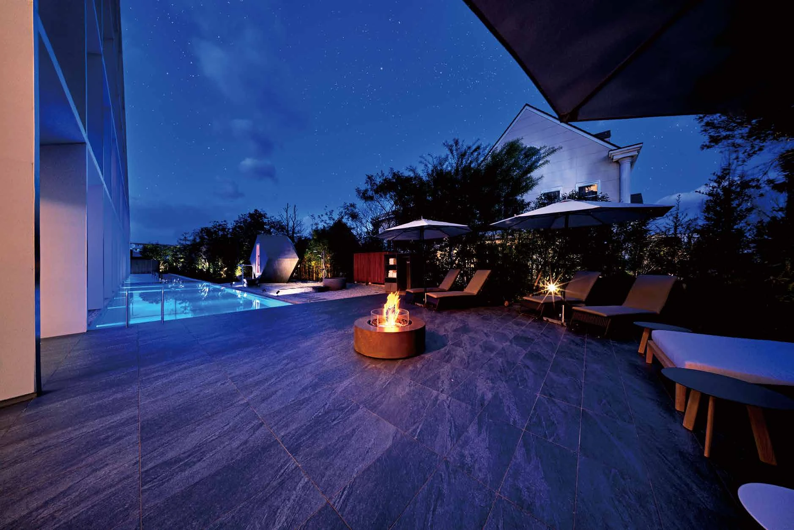
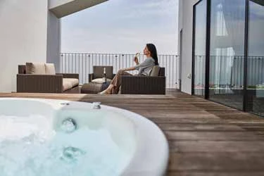
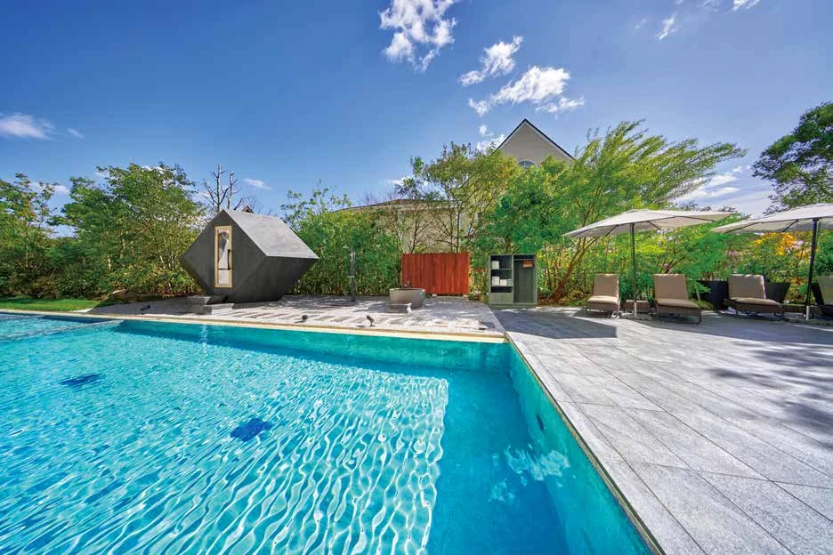
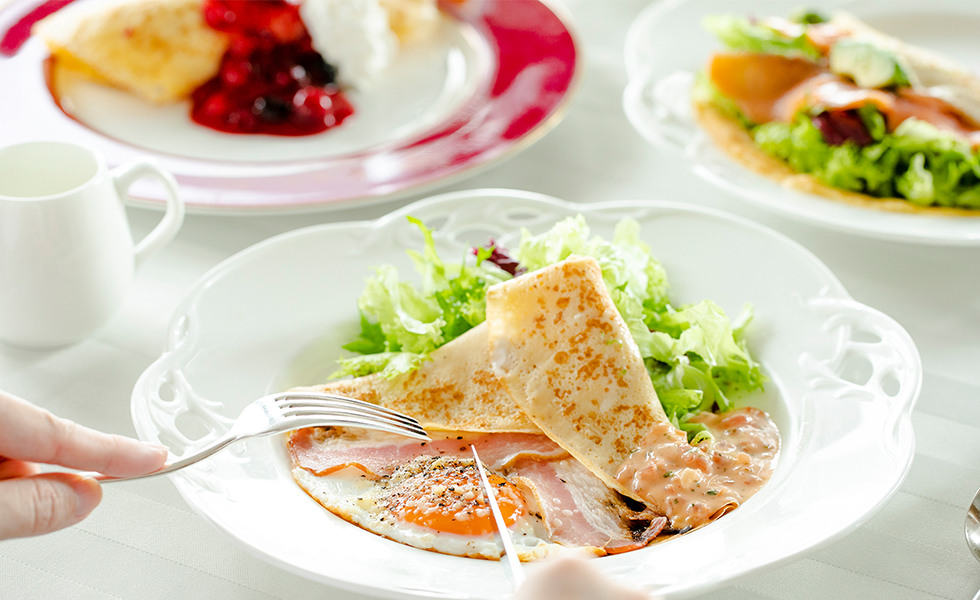

01
SUITE
スイートルーム
最上階で、空と過ごす。
プライベートテラスと屋外ジャグジーを備えた、最上階のスイート。夜風に包まれながら、ゆっくりとお過ごしください。
客室の詳細を見る ＋
- 客室面積
- 68.1㎡ ＋ テラス39.4㎡
- ベッド
- 幅140cm × 長さ200cm × 2台
- インターネット
- 無料Wi-Fi
3名様利用時はエキストラベッドを追加。

STAY AT GARDEN TERRACE SAGA
ご宿泊
YOUR OWN TIME IN SAGA
テラスに出て、風を感じる。
有田焼の器でお茶をいただく。
佐賀の食材を味わいながら、一日をはじめる。
街のほど近くで過ごす、穏やかなホテルステイ。
ご滞在の目的に合わせて、お部屋をお選びください。
プライベートテラスで過ごす休日も、
佐賀を巡る旅の拠点にも。

SUITE
プライベートテラスと屋外ジャグジーを備えた、最上階のスイート。夜風に包まれながら、ゆっくりとお過ごしください。
3名様利用時はエキストラベッドを追加。
TERRACE TWIN
屋外ジャグジー付きのプライベートテラス。開放的な空間で、昼から夜へ移ろう光と風を楽しめます。
3名様利用時はエキストラベッドを追加。
DELUXE TWIN
季節の光や草木を感じる客室。観光の後も、お部屋でくつろぐ時間をゆっくりと。
3名様利用時はエキストラベッドを追加。
STANDARD TWIN
プライベートバルコニーを備えたツインルーム。佐賀での観光にも、ビジネスでのご滞在にもおすすめです。
エキストラベッドの追加はできません。
STANDARD TERRACE
テラスで外の空気を感じながら、ご滞在を。客室の詳細と販売プランは、予約サイトでご確認いただけます。

02 / FACILITIES
A TASTE OF THE LOCAL
佐賀の食材を使った朝食で、一日のはじまりを。
ご夕食には鉄板焼ダイニング佐賀竹彩、
チャイニーズレストラン シャンリーもございます。

STAY INFORMATION
RESERVATION
ご滞在も、お食事も。
佐賀で過ごす時間を、ここから。
お子様を含むご予約は、予約サイトで人数・年齢を設定してください。検索結果は別タブで開きます。
往復航空券と宿泊をまとめて検索します。到着空港は佐賀空港です。お子様・旅程の詳細は予約サイトで設定してください。
TEPPANYAKI
0952-37-0885 （竹彩直通）
公式の予約窓口を見る ↗CHINESE RESTAURANT
0952-28-2655 （シャンリー直通）
Web予約窓口は現在メンテナンス中です。お電話でお問い合わせください。
Web予約窓口の状況を確認 ↗各店舗の予約窓口へご案内します。Webフォームでのお申し込みは、店舗からの連絡・案内をご確認ください。